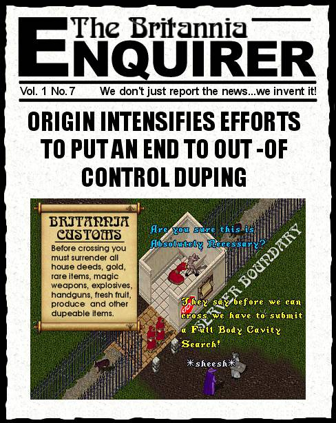

The Duping Issue - Now I don't want to get off on a rant here ...
*Warning* - this rant may contain language some may find offensive ... rated Mature
But, this latest problem with duping just has me mightily pissed off and I need to do a quick mind purge to get rid of it. Face it folks, if you don't think duping is harming the game, then it's time to hang up yur helm and check in at the reality clinic. Duping is screwing up the entire economy of Britannia. Figure it out, if I am a duper (no, I am not) and happen to have about 50 million gold in the bank, I can effectively clean out every vendor on the shard, meaning that you are not going to be able to purchase regs, magic weapons, rares, or anything else worth having from player vendors cause they are all going to be tapped out. And anything you do find is going to have the price so inflated that you won't be able to afford it anyway. I won't even get into the issue of duped castle deeds.
Dupers try to defend their actions by saying it's OSI's fault for having code that allows for duping. Wake the hell up! Have you seen the instructions on how items are duped? I mean, who the hell spends all their time figuring out all this shit anyway? Next thing we are going to read on the bulletin boards is that some wanker has figured out that if you get on a boat, sail it sideways over a server boundary, kill yourself by attacking a sea serpent then letting it wail on you, log out as a ghost, wait three days till you hear there has been a time warp, log back in, scream "recsu recdu" 400 times in the Mooglow Observatory, then fill your pack with greater explosions, gate to Buc's Den, recite the lyrics to "Age of Aquarius" three times, emote *farting* for five minutes, then hit Alt-F4 and when you log back in, all your greater explosion potions will have turned into rare golden coconuts that some LOSER on Ebay will pay you a 500 bucks apiece for! JESUS H. CHRIST!!!!!
Calm down, Tryon, you say ... NO! People, just cut it out damnit. Play the freakin' game the way it was supposed to be played! Stop looking for every lame loophole that will allow you to become "SoOpErDoOd" without putting in the time. You are screwing up the game, not to mention wasting huge amounts of Origin's time that could be spent making the game better, you know... implementing housing, finally getting necromancy working, fixing lag, etc. etc. etc. Now, I am no big fan of Origin and personally figure that they could be devoting a lot more of their resources to fixing the bugs, but it doesn't take shock therapy to figure that at least half their time is chasing whacked-out exploits that have nothing to do with gameplay.
And as for those unfortunate individuals who feel that the only way they can get ahead in the game is to purchase VIRTUAL ITEMS with REAL DOLLARS on Ebay, all I can say is GET A FREAKIN' LIFE! Don't tell me you are some kinda "professional" and just far too busy in your big, important, real life to build characters. And don't tell me you don't wanna chop wood or make armor 'cause it's too hard, or too slow. If you don't want to play by the rules of the game then LEAVE! (and don't let the door hit you in the ass on the way out.) Myself, and thousands of others just like me have been playing this game for years, building and rebuilding characters every time the rules or skill changes end up nerfing us, making fancy shirts or wooden shields by the hundreds to make the cash to move our characters up. That's UO!!! Deal with it or go play "Who wants to be a Millionaire", just don't try to justify BUYING your 'multi-7X gm, got a castle and tons of rares' way into a game that involves working you way up thru the ranks. If you bought your account on Ebay then the only title you have in a real player's eyes are Grandmaster SHMUCK, Illustrious WANNABE!
There, I feel much better now!
Anyway, that's just my opinion ... I could be wrong (apologies to Dennis Miller for use of his trademark phrase)
later...Tryon